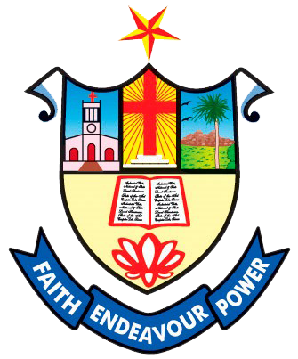
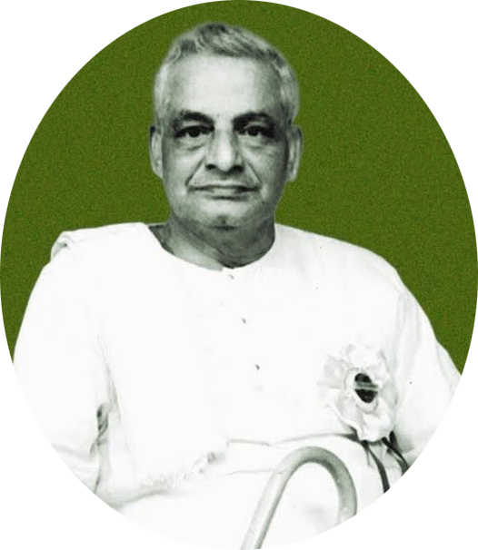
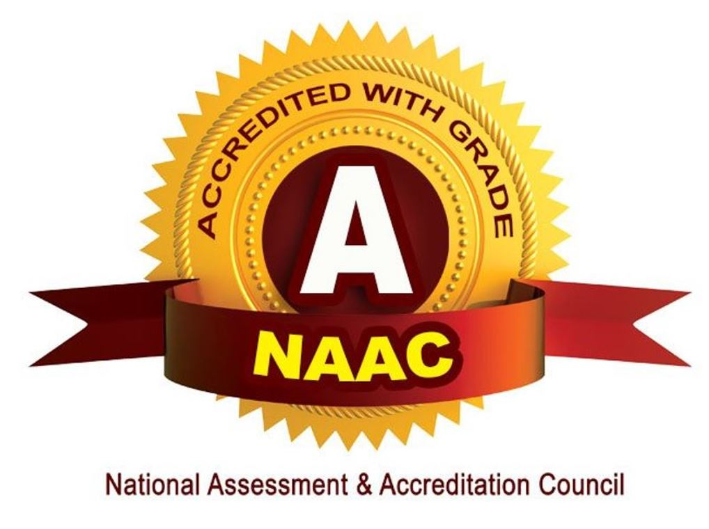
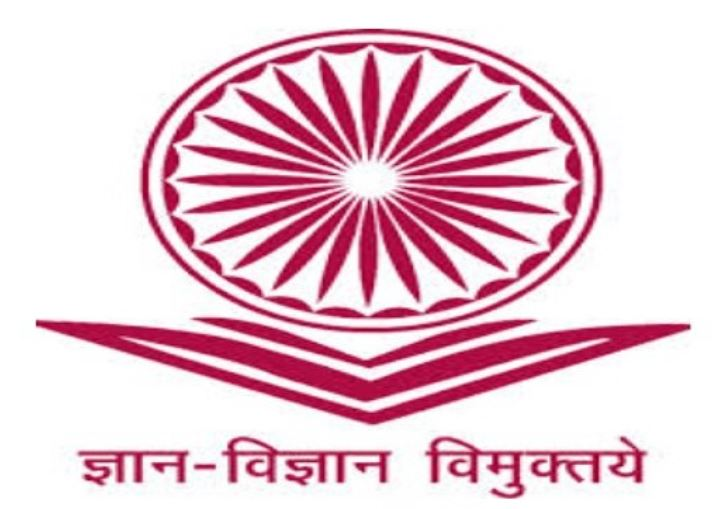

|  |
NESAMONY MEMORIAL CHRISTIAN COLLEGE |
|
[ESTD:1964, Administrated by CSI Kanniyakumari Diocese] Affiliated with Manonmaniam Sundaranar University Accredited to NAAC with ‘A’ Grade |  |
To make this College a centre with potential for excellence by imparting quality education to find new paths for the prosperity and progress of the people.
Uplifting and empowering the poor and downtrodden of this rural and backward area by providing value based and skill oriented higher education.
|  |  |
| 2014-2019 | Approved by UGC, New Delhi |
“ The capacity to learn is a gift; the ability to learn is a skill; the willingness to learn is a choice ”